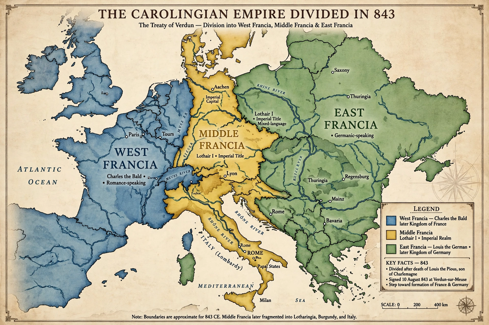

Treaty of Verdun

The Treaty of Verdun, agreed in August 843, divided the Carolingian Empire among the three surviving sons of Louis the Pious, the son and successor of Charlemagne. The treaty was concluded after three years of civil war following Louis's death in 840, and is often regarded as the foundational partition from which France and Germany emerged as separate political entities.
The three kingdoms
The eldest, Lothair I, retained the imperial title and received Middle Francia: a long central strip from the North Sea through Lotharingia and Burgundy to Italy. Charles the Bald received West Francia, roughly modern France west of the Saône and Rhône. Louis the German received East Francia, the lands east of the Rhine — roughly modern Germany. The arrangement followed Frankish custom of partible inheritance and a survey of the empire's resources by 120 commissioners.
Consequences
Lothair's middle kingdom, lacking linguistic and geographic coherence, fragmented after his death in 855 (Treaty of Prüm) and was fought over by its neighbours for centuries — Lorraine remained contested between France and Germany into the 20th century. The eastern and western kingdoms, meanwhile, gradually developed distinct identities. Two years before the treaty, the Oaths of Strasbourg (842), sworn by Charles and Louis in Romance and Germanic vernaculars, had already illustrated the empire's linguistic division; the oaths remain the earliest text in Old French.
See also: Charlemagne, Carolingian Empire, Holy Roman Empire.